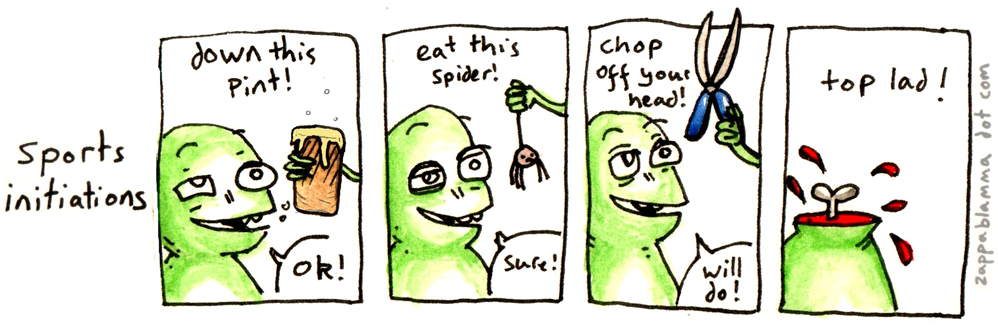
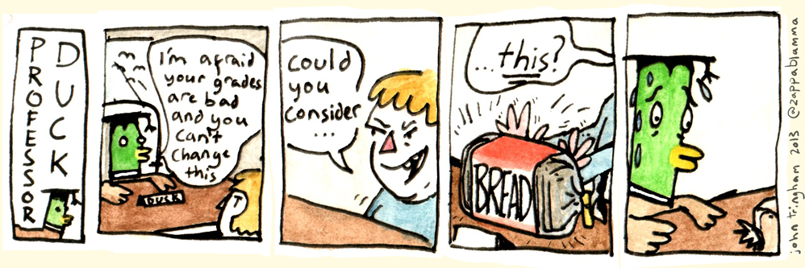
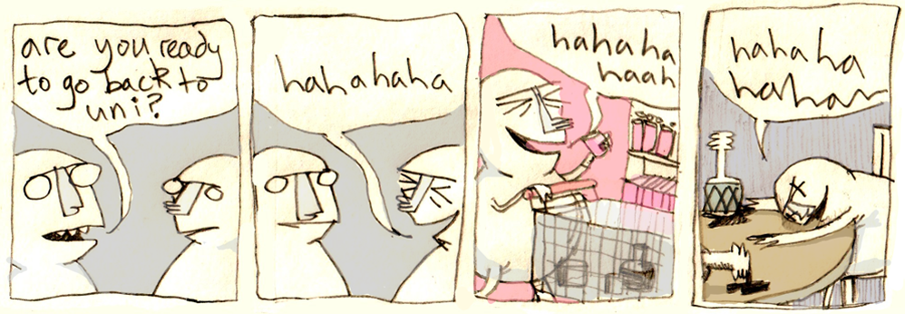
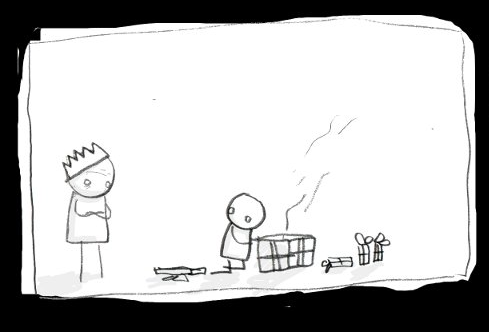
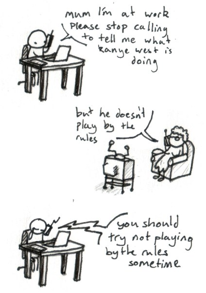
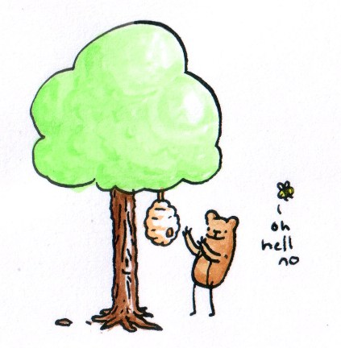

The Warwick Boar
From 2012-2014 I was one of the cartoonists for the Boar, the student newspaper for the University of Warwick. I did some illustrations that accompanied leading articles, as well as several strips.
  
A comic for an opinion piece about the strain of hiding a mental illness, 2013.
Bark
A short Christmas comic. Click to read.
Zappa Blamma
Since 2010, I have been running zappablamma.com, a personal blog to upload sketches, illustrations, art and comics. Here are some comics that were made for zappablamma:
 